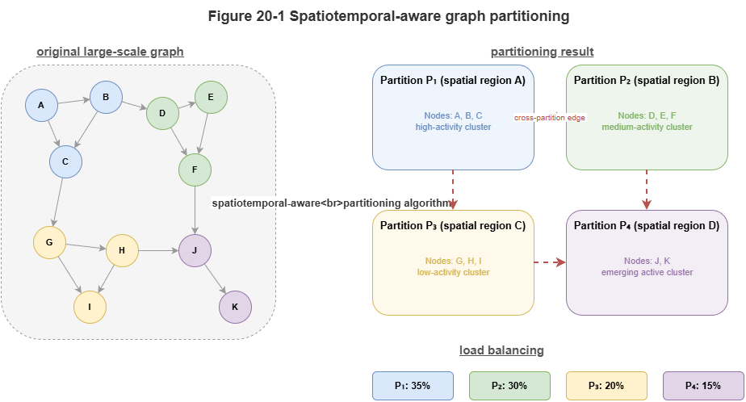
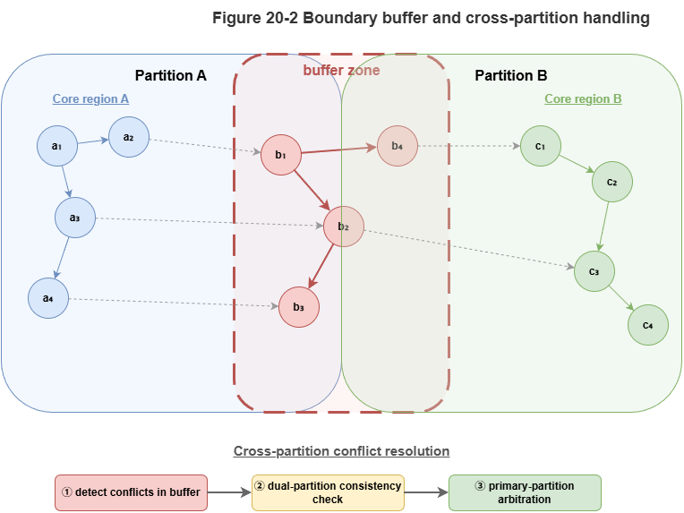
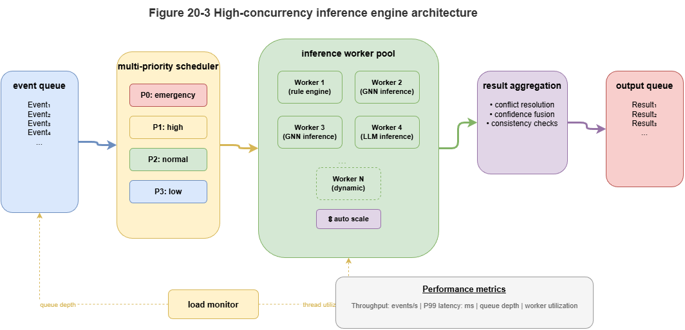

The preceding chapters addressed the compute gap for neuro-symbolic reasoning in large systems and the basic organization of distributed inference under cloud–edge collaboration. At true city-scale low-altitude traffic, a deeper engineering question appears: even capable graph and neuro-symbolic models stall without spatiotemporal graph partitioning and high-concurrency inference engines. The problem is not a “small graph scaled up” but a large dynamic spatiotemporal graph driven by high-rate state updates, concurrent multi-agent interaction, local dense coupling, and cross-region propagation. The system must not only reason but reason at scale—fast and stably.
Traditional single-machine graph stacks face three pressures: exploding graph scale as vehicles, airspace nodes, tasks, and rules grow together; highly uneven load concentrated in corridors, bottlenecks, and dense task zones; and non-local propagation—local deconfliction and flow shifts perturb neighbors and beyond. City-scale dynamic graph reasoning is therefore about partitioning without breaking validity, coherent boundaries, and controlled throughput.
This chapter focuses on the critical step from research prototype to urban engineering substrate: spatiotemporal-aware partitioning, high-concurrency graph inference, and system-level throughput and resilience. We discuss why low-altitude graphs need more than static topology cuts—spatial proximity, temporal coupling, and risk propagation must co-design partitioning; how subgraph cuts, boundary coordination, and cross-region conflict propagation balance local autonomy and global consistency; how engines parallelize neuro-symbolic inference via layered batching, multi-queue scheduling, and asynchronous events; how structural load balancing addresses hotspot bursts beyond average capacity; how throughput and fault tolerance behave under thousand-UAV stress and unreliable infrastructure; and how SkyGrid names a city-scale neuro-symbolic substrate evolving from prototype to sustainable infrastructure.
This chapter is not mere implementation trivia—it is the bridge from methods to deployable capability. Without it, KG foundations, dynamic models, and certification remain lab-scale; with it, neuro-symbolic systems can approach urban low-altitude governance.
20.1 Spatiotemporal-Aware Graph Partitioning#
At city scale, partitioning is unavoidable: whole-graph maintenance and inference on one node breaks on memory, latency, and scheduling—whether for GNN message passing, relational rule search, or risk propagation. The first design question is how to cut the graph.
Low-altitude traffic partitioning is not classical static graph partitioning aimed only at min-cut or balanced counts. Nodes and edges are spatiotemporal entities with physical location, temporal evolution, and risk coupling. Adjacency moves over time; corridor load fluctuates; conflict risk clusters locally. Purely topological balance can be graph-theoretically neat yet operationally wrong.
Spatiotemporal-aware partitioning uses three signals:
Spatial proximity: Strongly geo-neighboring vehicles, corridors, vertiports, and supervisory nodes interact often and should co-reside in a local subgraph when possible.
Temporal coupling: Entities may be logically tied across moderate spatial distance—same corridor wave, dependent task chains, tightly scheduled groups. They are high-coupling units and should not be split only because map distance is large.
Risk propagation: Some regions are quiet until fault, then risk spreads quickly; potential propagation paths belong in partition design.
Goals: keep intra-partition load real-time-feasible; minimize cutting high-frequency conflict and priority edges; globally balance load so a few hotspots do not dominate.
A common pitfall is rigid grids or administrative borders: traffic follows missions, corridors, and dispatch logic, not static tiles. Good partitions follow operational structure—flows, events, and rules—not just maps.
Neuro-symbolically, graphs also carry semantics: task types, priorities, risk tags, regulatory constraints, evidence. Rules may span regions; high-priority missions may be multi-region; evidence chains may need multi-subgraph state. Partitioning must respect knowledge and rule attachment, not only adjacency matrices.
Spatiotemporal partitioning is thus cross-layer: space, time, risk, and knowledge jointly define local autonomy units and global coordination seams. Later sections on boundaries and cross-region effects presuppose this framing.
20.2 Subgraph Cuts, Boundary Coordination, and Cross-Region Conflict Propagation#
Given partitioning, three coupled problems remain: how to cut subgraphs, how to coordinate boundaries, and how to monitor/control cross-region propagation. Otherwise partitioning becomes an optimization that breaks global reasoning consistency.
Subgraph cuts seek not perfect mathematical balance but tractable local compute, preserved critical relations, and bounded cross-partition traffic. Ideal local subgraphs cluster spatially and operationally coherent traffic, minimize high-frequency cross-boundary interaction, align local rules/tasks, and match node compute budgets. In practice, cuts often follow corridor clusters, vertiport groups, task bundles, or high-traffic cells—not arbitrary grids.
Boundaries are inevitable: vehicles cross partitions; tasks span regions; risk does not stop at lines. Boundary coordination means when multiple subgraphs share actors, time windows, or propagation channels, local consistency must be strong enough to avoid “each partition locally correct, globally inconsistent.” Example: handoff from partition A to B—if B updates late, B’s risk and capacity use stale state and seams appear.
Overlap buffers: neighbors should not meet at a razor line alone; buffer zones along critical corridors and handoff nodes maintain dual visibility or high-rate synchronized state—trading modest redundant compute for seam stability.
Cross-region conflict propagation: congestion, local avoidance, or priority insertions reroute flow and capacity beyond the originating cell. Treating conflict as purely local risks local success, global degradation. Risk moves on relation graphs, not administrative tiles.
Mitigations: escalate high-risk boundary events to fast peer broadcast and optional upper-tier coordinators; maintain boundary risk summaries (density, critical edges, priority inflow, buffer headroom) with thresholds that promote cross-partition collaboration. Cross-region risk is a first-class architectural object, not an edge case.
Neuro-symbolically, boundaries also carry priority, task attributes, and explanation continuity—e.g., emergency missions must not “reset” semantics at borders; audit evidence must not fragment. Coordination must sync numeric state and necessary knowledge/rule context.
Together, cuts + boundaries + propagation define the true performance envelope of partitioned city graphs: pretty average load with broken seams is useless; hyper-efficient locals that ignore propagation are unsafe. Viable designs pair local autonomy with ordered cross-partition coupling.
20.3 Parallelization Mechanisms for Graph Inference Engines#
Partitioning alone does not yield concurrency; parallel execution inside and across partitions sets throughput and tail latency ceilings. City-scale neuro-symbolic parallelization is not “more threads on a batch job” but dynamic updates, relational propagation, rule checks, and event triggers co-scheduled.
Graph inference is dependency-rich: GNN layers depend on neighbors; rules depend on local subgraph state; risk estimates may chain across rounds. Still, much work can run in parallel: identify intra-subgraph batchable work, asynchronous boundary buffers, and coordinator-serialized global steps.
Typical three-level parallelism:
Intra-subgraph: Parallel per-node updates, edge scoring, risk feature extraction, rule pre-screens—often batched or multi-queued once subgraphs are well formed.
Inter-subgraph: Independent partitions on different machines; sync on boundary summaries and critical events only.
Asynchronous coordination: Cross-region propagation, global capacity monitors, and priority tasks via event-driven messaging without global barriers every round.
Dynamic graphs demand incremental / local recomputation: only nodes, edges, and subgraphs touched by new events re-enter the inference pipeline—avoid perpetual full-graph recomputation under event storms.
Priority scheduling: Not all tasks share urgency—boundary high-risk conflicts, emergency-related updates, capacity-critical signals should preempt background refresh via priority queues, multi-level schedulers, and event preemption.
Neuro-symbolic hybrid pipelines: GNN vector updates parallelize well; discrete rule checks and evidence logging are spikier. A mixed parallel pipeline separates numeric high-frequency layers from symbolic layers triggered by events, coupled through a light event API—parallelism without serializing the whole stack on rules.
Elastic scaling: Peaks (rush hour, weather, surges) require container scheduling, resource pools, and migration so hotspot partitions can temporarily grow parallel capacity.
Parallelization is thus systems design for dynamic graphs, event streams, and hybrid neuro-symbolic stages—not a single kernel tweak.
20.4 Load Balancing for Large-Scale Conflict Detection#
Even with parallelism, skew dominates: risk and compute concentrate in hotspot subgraphs—dense corridors, central cores, emergency channels, boundary bands (double duty: local + sync + propagation). City-scale challenge is burst handling, not average FLOPs.
Structural load-aware balancing must weigh compute, graph coupling, and cross-partition cost—naïve equal CPU splits can raise communication and worsen latency.
Conflict-detection load sources: combinatorial neighbor growth in dense airspace; boundary overload; priority events triggering wide local recomputation; certification/explanation overhead on high-severity cases.
Layers of balancing:
Static pre-balance: Use history, predicted hotspots, and traffic forecasts when sizing partitions and provisioning—know the heat map before deploy.
Dynamic migration: Near-threshold partitions split subgraphs, offload secondary work, boost concurrency, or shift buffer compute to neighbors.
Priority-aware scheduling: Guarantee high-risk / high-propagation / high-priority paths first; defer low-priority background refresh.
Neuro-symbolically, balance GNN load and rule/certification load—hotspots trigger more rules, explanations, and assurance wrapping; balancing only FLOPs leaves logic bottlenecks.
Predictive balancing: Reactive migration after saturation is late; predict short-term hotspots from calendars, boundary signals, density trends—pre-warm caches, widen buffers, or temporarily reshape partition responsibility.
The goal is not equal busyness everywhere but timely response for priority risk while preventing hotspots from throttling the whole city.
20.5 Throughput and Fault Tolerance at Thousand-UAV City Scale#
Partitioning, parallelism, and balancing ultimately serve throughput (sustained events, conflict checks, rules, wrapping) and fault tolerance (node loss, jitter, lossy links, bad local data) under safety-critical expectations.
Throughput: Not sparse occasional telemetry but continuous fused streams—position updates, trajectory refresh, relation edits, task changes, rules, weather, certification—possibly tens of thousands of structured events per second with cascading local inference. Benchmark peak and tail latency, not averages only: a few seconds of overload delaying critical conflict checks is unacceptable. Design headroom, priority preemption, and graceful degradation so safety-critical paths survive peaks.
Fault tolerance: Assume restarts, edge outages, delay spikes, drops, cache corruption, brief bad sensors. Goals: scope impact, isolate faults, preserve critical functions, recover consistency gradually.
Four resilience themes:
State redundancy for boundary slices, hot corridors, and priority contexts.
Compute redundancy—standby edges or cloud takeover for failed locals.
Message resilience—retries, acknowledgments, backup paths for cross-partition and alerts.
Policy-level degradation—tighter human oversight, larger buffers, reduced autonomy when inference health drops.
Throughput and resilience tension: more redundancy costs bandwidth and sync; the right pattern is safety-first elasticity—high throughput in the nominal case; allowed throughput drop in distress if core safety monitoring, rules, and logging persist.
Evaluation should pair QPS with critical-path latency, tail under peak, boundary sync success, recovery time, and minimal safe capability in degraded mode.
20.6 SkyGrid: From Research Prototype to Engineering Substrate#
The preceding sections argue that city-scale low-altitude neuro-symbolic systems need a unified substrate—not a loose collection of strong models—integrating knowledge, dynamic graph inference, rules, certification, and distributed execution. SkyGrid names that urban neuro-symbolic infrastructure.
As a prototype, SkyGrid may only test whether partitioning and cloud–edge collaboration support large-scale traffic reasoning. As engineering substrate, it must:
Orchestrate unified state across multi-source spatiotemporal graphs, KG objects, and boundary summaries.
Execute inference by scheduling dynamic models, rules, and certification across edge and cloud.
Expose control and governance interfaces with consistent risk, explanation, and certification outputs.
Run elastically under peaks, faults, cross-region effects, and system-wide degradation policies.
Architecturally, SkyGrid stacks: edge local subgraphs and near-field conflict; regional coordinators for buffers, cross-region summaries, and load reshaping; cloud global KG consistency, rule releases, certification model governance, and city resource scheduling—matching time, space, and accountability scales to the right tier.
Platformization: Capabilities become reusable services—static risk for approval; dynamic conflict for real-time dispatch; certification for high-severity events; KG maintenance shared across roles—not a one-off paper pipeline.
Long-term evolution: Real bases face ontology updates, rule versions, model upgrades, load drift, and new mission types. SkyGrid must support modularity, versioning, canary rollout, and runtime observability so models and policy evolve without freezing the platform.
SkyGrid threads the book: knowledge substrate (Part II), static cognition (Part III), dynamic collaboration (Part IV), certification (Part V)—without such a base, pieces do not compose; with it, they form a chain from sensing to risk, rules to certification, edge to governance.
Methodologically, SkyGrid embodies substrate-first thinking for complex governance: the ceiling is often set by whether the base can carry state flow, inference flow, evidence flow, and assurance flow—not a single model’s accuracy alone.
Chapter Summary#
This chapter addressed spatiotemporal graph partitioning and high-concurrency inference engines for city-scale deployment: graphs as spatiotemporal–risk objects, not static topology; subgraph cuts with buffers and cross-region propagation control; layered asynchronous parallel pipelines for dynamic hybrid neuro-symbolic workloads; structural load balancing for hotspots and certification overhead; throughput and resilience under thousand-UAV stress; and SkyGrid as the integrated engineering substrate from prototype to urban platform.
The step is from “method exists” to “system can carry it.” Part VI now continues to platformization—how the substrate becomes multi-role interfaces and a governance closed loop (Chapter 21).
Key Concepts#
Spatiotemporal-aware partitioning: Cuts that respect space, time coupling, and risk propagation.
Boundary buffer: Overlapped computation near seams to reduce discontinuity and coordination failure.
Mixed parallel pipeline: Layered parallel numeric graph steps with event-triggered symbolic stages.
Structural load-aware balancing: Scheduling that respects compute, coupling, and cross-partition cost.
SkyGrid: City-scale substrate integrating knowledge, reasoning, certification, and operations.
Exercises#
Why are simple administrative or grid partitions inadequate for low-altitude traffic graphs?
How does “parallel graph inference” here differ from classical batch parallel processing?
Why does average compute splitting fail when hotspot regions spike?
Case Study#
Downtown hotspot corridor overload: rush-hour risk-edge explosion; the system uses hotspot prediction, buffer expansion, and subgraph task migration to stabilize latency—illustrating joint partitioning, parallelism, and balancing.
Figure Suggestions#
Figure 20-1: Principles of spatiotemporal-aware partitioning.

Figure 20-2: Boundary buffers and cross-region propagation paths.

Figure 20-3: Multi-queue scheduling and elastic scaling in high-concurrency engines.

Formula Index#
Engineering mechanisms and scheduling; no core derivations.
Index: partition objectives, boundary coordination, incremental recomputation, structural balancing, throughput vs. fault tolerance.
References#
Karypis, G., & Kumar, V. (1998). A Fast and High Quality Multilevel Scheme for Partitioning Irregular Graphs. SIAM Journal on Scientific Computing, 20(1), 359–392.
Gonzalez, J. E., Low, Y., Gu, H., Bickson, D., & Guestrin, C. (2012). PowerGraph: Distributed Graph-Parallel Computation on Natural Graphs. Proceedings of the 10th USENIX Symposium on Operating Systems Design and Implementation (OSDI).
Malewicz, G., Austern, M. H., Bik, A. J. C., Dehnert, J. C., Horn, I., Leiser, N., & Czajkowski, G. (2010). Pregel: A System for Large-Scale Graph Processing. Proceedings of ACM SIGMOD.
Low, Y., Gonzalez, J. E., Kyrola, A., Bickson, D., Guestrin, C., & Hellerstein, J. M. (2012). Distributed GraphLab: A Framework for Machine Learning and Data Mining in the Cloud. Proceedings of the VLDB Endowment, 5(8), 716–727.
Stanton, I., & Kliot, G. (2012). Streaming Graph Partitioning for Large Distributed Graphs. Proceedings of the 18th ACM SIGKDD International Conference on Knowledge Discovery and Data Mining (KDD).
Yu, B., Yin, H., & Zhu, Z. (2018). Spatio-Temporal Graph Convolutional Networks: A Deep Learning Framework for Traffic Flow Forecasting. Proceedings of the 27th International Joint Conference on Artificial Intelligence (IJCAI).